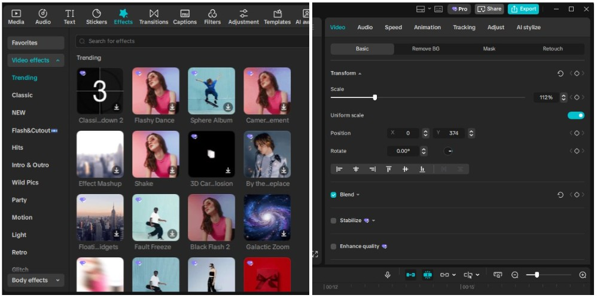
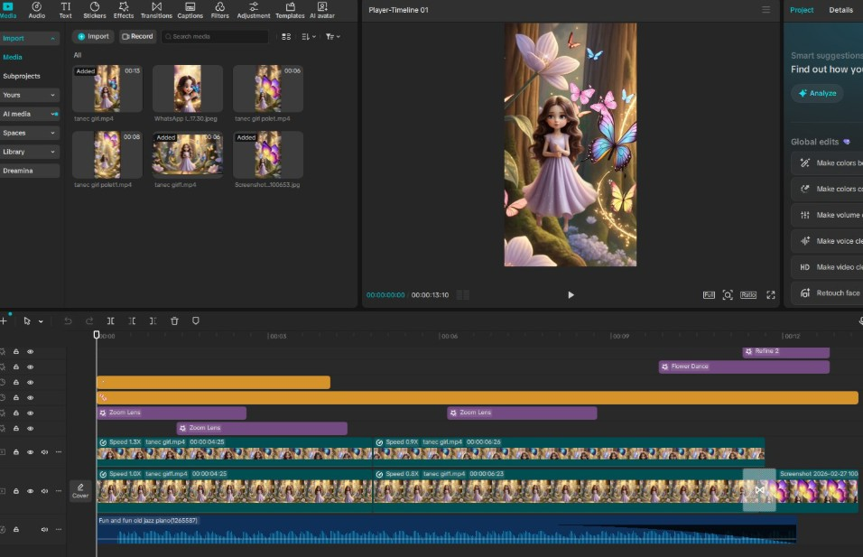

Beyond the Prompt: Mastering CapCut for AI Video Editing
Welcome to the editor’s chair! If you are here, it means you have already created some amazing raw footage using tools like Kling AI or Luma Dream Machine. But the secret of professional AI video creation is that the journey doesn’t end with the "Generate" button.
Generative AI is powerful, but it is rarely perfect. You will encounter glitches, weird artifacts, or a scene that starts perfectly but dissolves into chaos. This is where CapCut comes in. As an experienced editor, I can tell you that a few strategic edits in CapCut can elevate a good AI clip into a breathtaking masterpiece.
Let's look at the essential tools and techniques that every new AI creator needs to master in the CapCut desktop interface.
🏗️ Getting Acquainted with the Interface
First, let's establish our bearings using your screenshots. While there are many buttons, you only need to focus on a few key areas when starting.
1. The Assets & Effects Panel (Top Left)
This is your toolbox. This is where you import your AI-generated clips (Media), find background music (Audio), add text (Text), and—most importantly for AI video—apply Effects and Filters.

Look at the Video Effects dropdown on the left of the image (capcut-effects.jpg). The Trending, Nature, and Lens categories are goldmines for adding atmosphere (like light leaks, sparkles, or fog) to your AI scenes. The Body Effects tab (also in image_2.png) is specifically designed to recognize human/humanoid forms and apply glow or contour effects to them.
2. The Details/Properties Panel (Top Right)
When you select a clip or an effect on your timeline, its advanced settings appear here. As seen in image(capcut-effects.jpg), the Video -> Basic tab contains essential tools:
- Transform (Scale/Position): Use this to zoom into your AI clip to hide artifacts near the edges or re-frame the shot.
- Blend: Crucial for overlays! This controls how a new layer (like falling snow or magic dust) sits on top of your main footage.
- Stabilize & Enhance quality: These are "fix-it" buttons that every AI editor should try. Stabilize helps smooth out jerky AI camera movements, and Enhance can sometimes sharpen up a soft AI face.
3. The Timeline (Bottom)
This is your canvas, where the sequence is built. AI video requires complex timelines. In image (the Sleeping Hedgehog) and image (the Fairy Dance), notice the distinct colored bars stacked vertically:
- 🔵 The Main Video Track: The foundation of your scene.
- 🟠 Overlays/Effects (Zoom Lens): Adjusting the "strength" of an effect over time.
- 🟣 Audio Track: Your background music or sound effects.
🛠️ The Expert's Toolkit: Techniques for Seamless AI Video
Now, let's cover the three essential techniques that turn AI glitches into cinematic art.
🚀 1. Speed Ramping (Custom Speed Curves)
Why we use it in AI: Generative AI video often lacks dynamic pacing. It usually generates at a constant speed, which can feel flat. Furthermore, if the AI makes a slight mistake mid-clip (a twitching eye or a melting leg), you can use speed ramping to "jump" past the mistake so fast the viewer doesn't notice. Conversely, if an AI generates a spectacular action, you can use a curve to slow down that specific moment to emphasize its "epicness."
How to use it (Basic): In the Properties Panel (Top Right), go to the Speed tab. Instead of just changing the Normal multiplier (e.g., 2x), switch to the Curve tab. Use a template like "Hero" or "Bullet Time." You will see a line with dots. Drag the dots up to go faster, and down to go slower. This creates smooth, cinematic transitions rather than jerky cuts.
🔄 2. The Reverse Trick
Why we use it in AI: This is my favorite troubleshooting hack. AI videos frequently start off perfectly but "break" at the end as the model loses consistency. If you have a beautiful 10-second scene that looks great for 8 seconds and then dissolves into a glitch, don't delete it!
The Technique: Use the Reverse button. In CapCut's timeline tools (just above the timeline), look for the button that looks like an open circle with an arrow. When you reverse that "broken" clip, it will start with the chaotic mess and resolve into the perfect, smooth character movement. It looks like a magical assembly or a creature recovering from chaos, and it’s a brilliant way to save unusable footage.
✨ 3. Overlays & Masking (Adding Magic)
Why we use it in AI: An AI clip can sometimes feel a bit "sterile" or digitally flat. Overlays allow you to add "magical particles," "light dust," or "weather effects" between the character and the background, making the scene feel alive.
How to use it (Step-by-Step):

- Generate your base scene: (e.g., the Sleeping Hedgehog from image(capcut-effects.jpg) or the Fairy from image(capcut-effects-girl.jpg).
- Generate an "Overlay Clip": Create a separate video in Kling AI using a prompt like "Magical glowing butterflies flying in dark space, black background" or "Falling cherry blossom petals, transparent background."
- Import and Stack: Import your base scene and your overlay clip into CapCut. Drag your base clip onto the primary track and drag your overlay clip onto the track directly above it.
- Use Blending: Select the Overlay clip. Go to the Properties Panel -> Video -> Basic. Look for Blend (as seen in image (capcut-effects.jpg). Change the Mode from Normal to Screen or Lighten. This magically hides all the black parts of your overlay clip, leaving only the glowing butterflies or dust floating perfectly on top of your hedgehog or fairy. Adjust the Opacity slider to make it subtle.
👨💻 Final Advice: Building Your Final Scene

When you are combining many clips into one story (like the multiple "Fairy Dance" clips seen on the timeline in image, use transitions and stabilization to make the whole piece feel like it was shot by a real human crew. Don't be afraid of layers! Your final project should look like image (capcut-effects-girl), with separate tracks for music, voiceover, text titles ("Good night!"), and visual effects overlays, all working together.
Happy editing!